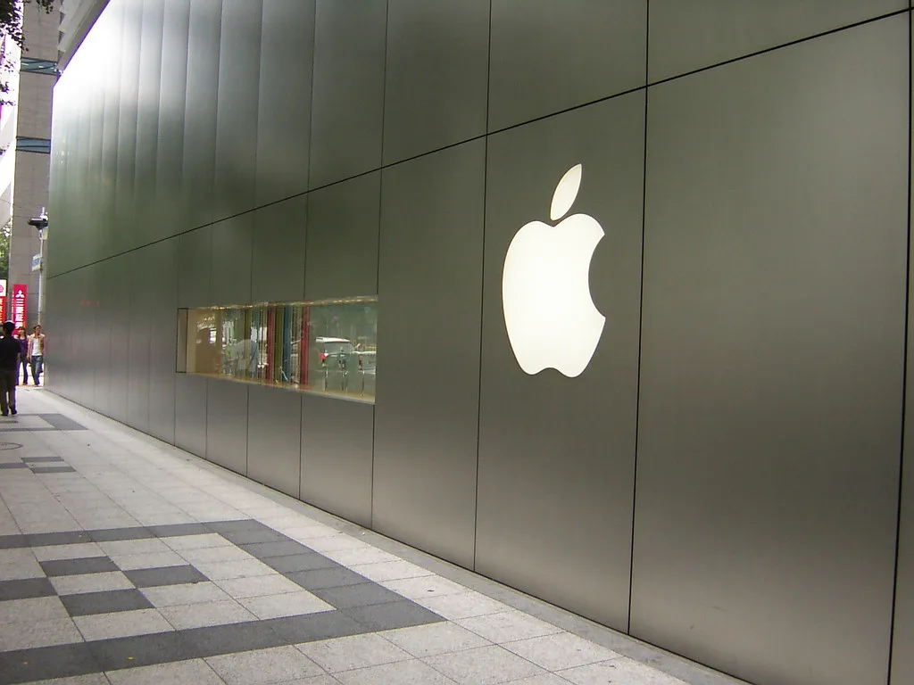
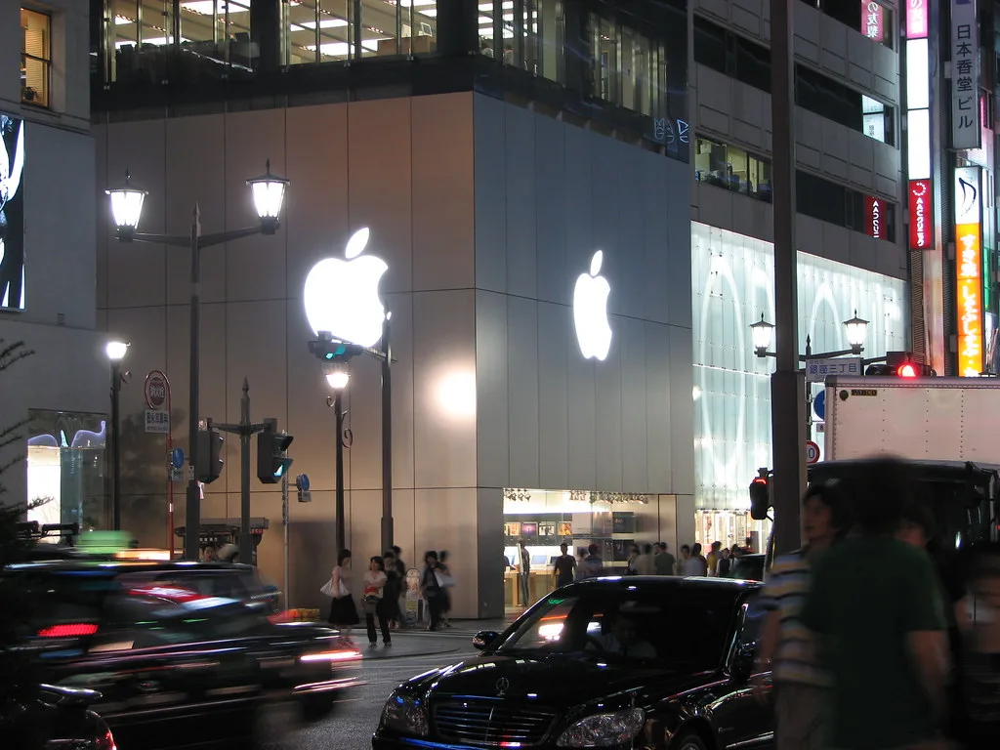

애플, '시리 AI' 앞세운 첫 스마트홈 허브 '홈뷰' 공개
애플이 13일(현지시각) 첫 스마트홈 허브인 '홈뷰(HomeView)'를 공개하며 아마존과 구글이 양분하고 있던 스마트홈 시장에 본격 도전장을 던졌다. 홈뷰는 A18 칩과 6인치 화면을 탑재하고 음성 비서 시리를 중심으로 작동하는 기기로, 집 안 곳곳의 조명과 온도, 보안 장치 등을 한 화면에서 제어하는 컨트롤 허브 역할을 하게 된다. 출시 시점은 이날 발표됐지만 실제 제품 출하는 11월 중순으로 예정됐다.
이번 발표에서 가장 눈에 띄는 변화는 시리의 역할이다. 애플은 그동안 음성 비서 기능에서 아마존 알렉사나 구글 어시스턴트에 비해 스마트홈 영역에서의 활용도가 떨어진다는 평가를 받아왔는데, 이번 홈뷰는 개편된 시리 AI를 전면에 내세워 이런 약점을 정면으로 보완하려는 시도로 풀이된다. 사용자는 화면을 직접 조작하지 않고도 음성 명령만으로 집안 기기들을 연동해 제어할 수 있으며, 애플은 이를 통해 스마트홈 허브 시장에서 아마존의 에코 쇼, 구글의 네스트 허브와 정면으로 경쟁할 것으로 보인다.

애플은 이번 스마트홈 전략에서 LG전자와도 협력 관계를 맺었다. 애플이 자체 생태계를 비교적 폐쇄적으로 운영해 온 것과 달리, 이번에는 도어벨과 온도조절기 같은 홈 액세서리 분야에서 LG전자와 손을 잡으며 10년 가까이 이어진 스마트홈 빗장을 일부 풀었다는 평가가 나온다. 외부 제조사와의 협업을 통해 홈뷰가 다룰 수 있는 기기 범위를 넓히고, 사용자 입장에서 선택할 수 있는 액세서리의 폭도 함께 늘리려는 전략으로 해석된다.
같은 날 애플은 신형 애플TV 4K와 홈팟 미니 2세대도 함께 선보였다. 두 제품은 외형상 큰 변화는 없지만 내부적으로는 시리 AI를 지원하는 더 빠른 칩을 탑재해 음성 명령 반응 속도와 처리 능력을 끌어올렸다. 이들 제품의 매장 출시일은 10월 30일로 예정돼 있어, 홈뷰보다 먼저 소비자들의 손에 들어갈 전망이다. 애플은 이번 라인업을 통해 스마트홈 허브부터 셋톱박스, 스피커까지 집 안 전역을 시리 AI로 엮는 생태계를 완성하려는 모습이다.

업계에서는 애플의 이번 진입이 스마트홈 시장 경쟁 구도에 변화를 가져올 수 있다고 보고 있다. 아마존과 구글이 저가형 스피커와 디스플레이 기기로 시장 점유율을 선점해 온 반면, 애플은 상대적으로 고가 전략과 자사 생태계와의 연동성을 강점으로 내세우고 있어 소비자층이 겹치지 않을 가능성도 제기된다. 다만 시리의 실제 성능 개선 정도가 소비자 반응을 가를 핵심 변수가 될 것이라는 전망이 많다. 아이폰, 맥, 애플워치 등 기존 애플 기기를 여러 대 보유한 사용자일수록 홈뷰를 통한 통합 제어의 편의성을 더 크게 느낄 수 있다는 분석도 나온다.
애플이 그동안 스마트홈 기기 분야에서 상대적으로 소극적인 행보를 보였던 이유로는 시리의 음성 인식 정확도와 반응 속도가 경쟁사 대비 뒤처진다는 평가가 꾸준히 제기됐던 점이 꼽힌다. 이번에 개편된 시리를 홈뷰, 애플TV, 홈팟 미니에 동시에 적용한 것은 음성 비서 성능에 대한 자신감이 어느 정도 뒷받침됐다는 신호로 해석되기도 한다. 동시에 LG전자와의 협업처럼 외부 제조사와 손잡는 방식도 병행하면서, 자체 기술 보완과 생태계 확장을 함께 추진하는 전략을 택한 것으로 보인다.
애플의 스마트홈 시장 진출은 수년간 예고됐던 행보였던 만큼, 이번 홈뷰 공개로 애플이 거실을 넘어 집 전체로 생태계를 확장하려는 움직임이 본격화됐다는 평가가 나온다. 11월 중순 실제 제품이 출하되면 시리 AI의 완성도와 아마존·구글 제품과의 체감 차이가 시장의 평가를 가를 것으로 보인다. 애플TV 4K와 홈팟 미니 2세대가 그보다 앞선 10월 30일 먼저 매장에 풀리는 만큼, 소비자들은 두 제품을 통해 개편된 시리의 체감 성능을 먼저 가늠해볼 수 있을 전망이다.